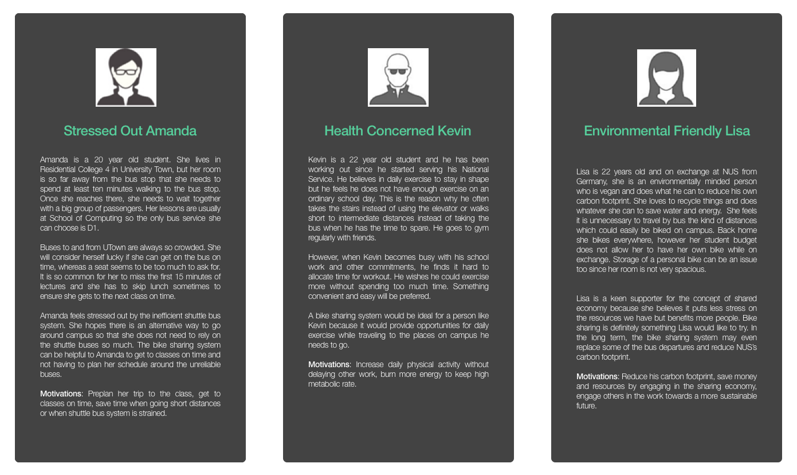

RideNUS
Effective campus transportation
Methods
Design Thinking
Rapid Prototyping
Empirical Research
Practices
Contextual Interview
iOS UI Design
Tools
Adobe Photoshop
Sketch
Project Time
Mar 2016
Goal: "Effective campus transportation”
Background: NUS CS3240 "Interaction Design" Class Project
Project scope focuses on solving a problem persists in the scope of campus life. The project pratises a full cycle of interaction design: User Studies - Requirement Analysis - Prototyping - User Evaluation.
Problem: Can we split buses?
This project aims to solve the problem with the inflexibility of the shuttle bus system at NUS. During peak hours the demand for them is higher than the supply, resulting in overly crowded buses and sad passengers. During off-peak on the other hand the buses do not run as often, resulting in longer waits. In the worst case there is no bus service at all, leaving passengers with few options for how to get around other than walking long distances.
Solution: E-Scooter System
To mitigate this problem we propose to design a smartphone application which could be used in unison with a electric scooter rental system on campus. Such scooter based rental systems have previously been adopted on campuses worldwide, for example at University of British Columbia in Canada and University of Nottingham in the UK. It is our opinion that a well designed interactive mobile application for people to use the system would be a large part in the success of deploying such a system on campus and thus we are looking into the requirements and design of an application would such a system become available at NUS.
Why scooters? -
Scooter has a more flexible transporting power, when someone finishes up using, the other can take it.
Why go electrical? -
Ordinary scooter used to be on our list, however considering the large number of slopes in NUS campus, electric powered one takes less efforts to ride.
A bit too fictitious? -
The security patrolling vehicle around campus has all switches to self balancing scooters, sounds like a good time to make the idea more prevailing.
Design Process
| User Studies
In order to precisely define our target user group, we started our project with user study. We defined three user groups. Upon defining user groups, we carried out a series of semi-structure interview where we had our target users described their experiences with shuttle bus in general. The purpose of the interview is to gather user opinions of the current shuttle bus system and their essential needs in using scooter system.

| Requirement Analysis
We started off the data analysis by concatenating all of the interview answers into the same document to get a better overview of where the respondents had similar opinions and where they differed. We then summarized the core findings on post-its in order to make an affinity diagram.
From analysing interview answers and affinity diagram, we further came up a few main tasks from within our project scope. 3 tasks were difined at this phase. They are “Plan trip & check scooter availability”, “Route planning” and “Usage fee”. These three tasks reflected users current issue with the shuttle bus system and defined users’ actual needs in using an alternating scooter system.
After performing a task analysis we have concluded a few requirements for the mobile application which would work in unison with a scooter rental system on the NUS campus:
1. Booking a scooter - The users expressed their concern on the unreliability shuttle bus system. Enabling user to book a scooter from a remote application would allow the users to either plan their trip beforehand and check which scooters are available right now.
2. Unlocking and locking a scooter in a hassle free way - To make the system flexible to use there can be no extra work included with keys and such but rather the unlocking and locking of a scooter take place from inside the application.
3. Plan route - The application would provide the user with the option to find a route to take in case the user is not sure where to go. Different routes for fastest travel, less trafficked roads and roads with less hills would address the users personal preferences.
4. Making sure there are places to return the scooter - To make the returning process easy to cope with, the application would have a function which allows the user to book a return station before he or she starts biking.
5. Seeing when to pay - The application would show how long the user can use the scooter before it starts costing money and how much money it is costing after that period, which gives the user substantial information to decide how they want to use the system.
| Storyboard & Use Cases
To achieve a universal agreement of the main usage senario among our group mates, we made a storyboard that describes how the primary users, could go about to achieve their goals through three key tasks:
1. Finding available scooters based on user’s geological location and unlocking a scooter
2. Plan trip on campus, provide suggestions on different types of routes
3. Return scooter at destination
| Protoyping & User Evaluation
To achieve better prototyping result, we built our protypes in parallel. Among four group members, each one of us built our own prototype individually. We believed that in this way we could generate more creative ideas and covers more potential problems.
Iteration 1
Iteration 2
The “Think-Aloud” method is a powerful evaluation technique as it allows us to gain more insights into what the users really feel than other commonly-seen methods like observing. Thus we invited four users to evaluate our prototypes using the “Think Aloud” method where they are encouraged to voice out their thoughts while they perform tasks in a given scenario.
However, users tend to describe what they are doing rather than what they are thinking. In such cases we try to prompt them by asking questions when we observe that they may have something to say. And in some cases thoughts were also shared after the user had tried the prototype, more in line with a retrospective think-aloud.
Final Product
Aside from incorporating all the requirements from user studies. The final product focus more on polishing the UI.
Component Based Design
To attain reusablility of elements and achieves style consistency across all elements. Each of the UI components are designed as an extension of the base UI template.
Reflection
Uncomprehensive User Evaluation
Due to the limited time given, user evaluations were not conducted on a large scale. Constrained user group may possess the risk of introducing bias in user behaviors, resulting in imappropriate UI structuring and thus undermine overall user experience.